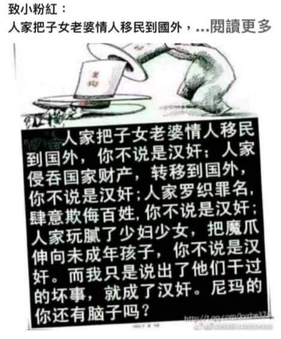

月影独下
@tadatsukiei
@MusiqW54Aq97012 @lixng2236151 @cuichenghao7 能被当成女生是非常开心啊，谢谢～
但是你个舔共的狗奴才有什么资格指责我汉奸？共匪是卖国贼，而你是他们的帮凶。
跟这种无耻败类没话说，溜了溜了。

敢当汉奸的老子全杀了
@MusiqW54Aq97012
@lixng2236151 @tadatsukiei @cuichenghao7 你看她帖子，她都当汉奸了，直接骂就行了，